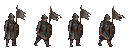
primary实机通过
soldier
soldier
candidate-01/assets/runtime-v2/units/gray-banner-soldier-walk.png
本页只展示按 32px 网格、动画帧、锚点、透明通道与状态切片契约生产的运行时素材。标为“候选待实机”的包已通过机器 QA，但仍需进入真实关卡截图后才能晋级。
126 项 · 15 项来自实机通过包

soldier
candidate-01/assets/runtime-v2/units/gray-banner-soldier-walk.png
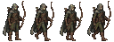
archer
candidate-01/assets/runtime-v2/units/silverwood-archer-walk.png
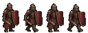
knight
candidate-01/assets/runtime-v2/units/burgundy-knight-walk.png
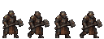
cleric
candidate-01/assets/runtime-v2/units/forge-cleric-walk.png
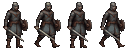
c01-b02-unit-swordsman
candidate-01/assets/runtime-v2/batch-02/units/swordsman.png
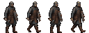
c01-b02-unit-engineer
candidate-01/assets/runtime-v2/batch-02/units/engineer.png
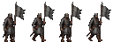
c01-b02-unit-banner-guard
candidate-01/assets/runtime-v2/batch-02/units/banner-guard.png
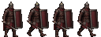
c01-b02-unit-legion-shield
candidate-01/assets/runtime-v2/batch-02/units/legion-shield.png
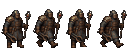
c01-b02-unit-rune-artificer
candidate-01/assets/runtime-v2/batch-02/units/rune-artificer.png
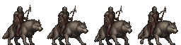
c01-b02-unit-wolf-rider
candidate-01/assets/runtime-v2/batch-02/units/wolf-rider.png
c01-b02-unit-gravekeeper
candidate-01/assets/runtime-v2/batch-02/units/gravekeeper.png
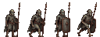
c01-b02-unit-skeleton-guard
candidate-01/assets/runtime-v2/batch-02/units/skeleton-guard.png
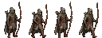
crown.unit.silver-longbow
candidate-01/assets/runtime-v2/batch-03/units/c01-v2-b03-unit-silver-longbow.png
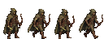
crown.unit.ranger
candidate-01/assets/runtime-v2/batch-03/units/c01-v2-b03-unit-ranger.png
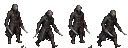
crown.unit.assassin
candidate-01/assets/runtime-v2/batch-03/units/c01-v2-b03-unit-assassin.png
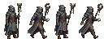
crown.unit.mage
candidate-01/assets/runtime-v2/batch-03/units/c01-v2-b03-unit-mage.png
crown.unit.ballista
candidate-01/assets/runtime-v2/batch-03/units/c01-v2-b03-unit-ballista.png
crown.unit.lance-cavalry
candidate-01/assets/runtime-v2/batch-03/units/c01-v2-b03-unit-lance-cavalry.png
crown.unit.battle-mage
candidate-01/assets/runtime-v2/batch-03/units/c01-v2-b03-unit-battle-mage.png
crown.unit.eagle-scout
candidate-01/assets/runtime-v2/batch-03/units/c01-v2-b03-unit-eagle-scout.png
crown.unit.woodland-walker
candidate-01/assets/runtime-v2/batch-03/units/c01-v2-b03-unit-woodland-walker.png
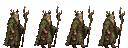
crown.unit.druid
candidate-01/assets/runtime-v2/batch-03/units/c01-v2-b03-unit-druid.png
crown.unit.white-stag-rider
candidate-01/assets/runtime-v2/batch-03/units/c01-v2-b03-unit-white-stag-rider.png
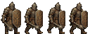
crown.unit.rune-shield
candidate-01/assets/runtime-v2/batch-03/units/c01-v2-b03-unit-rune-shield.png
crown.unit.axe-breaker
candidate-01/assets/runtime-v2/batch-03/units/c01-v2-b03-unit-axe-breaker.png
crown.unit.stone-golem
candidate-01/assets/runtime-v2/batch-03/units/c01-v2-b03-unit-stone-golem.png
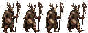
crown.unit.shaman
candidate-01/assets/runtime-v2/batch-03/units/c01-v2-b03-unit-shaman.png
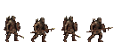
crown.unit.javelin-hunter
candidate-01/assets/runtime-v2/batch-03/units/c01-v2-b03-unit-javelin-hunter.png
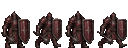
crown.unit.heavy-knight
candidate-01/assets/runtime-v2/batch-03/units/c01-v2-b03-unit-heavy-knight.png
crown.unit.spirit-fire
candidate-01/assets/runtime-v2/batch-03/units/c01-v2-b03-unit-spirit-fire.png
crown.unit.cannon-wagon
candidate-01/assets/runtime-v2/batch-03/units/c01-v2-b03-unit-cannon-wagon.png
crown.unit.troll
candidate-01/assets/runtime-v2/batch-03/units/c01-v2-b03-unit-troll.png
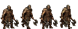
crown.unit.berserker
candidate-01/assets/runtime-v2/batch-03/units/c01-v2-b03-unit-berserker.png
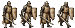
crown.unit.templar
candidate-01/assets/runtime-v2/batch-03/units/c01-v2-b03-unit-templar.png
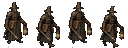
crown.unit.inquisitor
candidate-01/assets/runtime-v2/batch-03/units/c01-v2-b03-unit-inquisitor.png
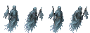
crown.unit.ghost
candidate-01/assets/runtime-v2/batch-03/units/c01-v2-b03-unit-ghost.png
crown.unit.cemetery-colossus
candidate-01/assets/runtime-v2/batch-03/units/c01-v2-b03-unit-cemetery-colossus.png
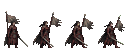
crown.unit.ivra-growth
candidate-01/assets/runtime-v2/batch-03/units/c01-v2-b03-unit-ivra-growth.png
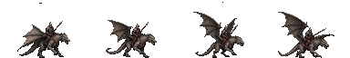
crown.unit.wyvern-rider
candidate-01/assets/runtime-v2/batch-03/units/c01-v2-b03-unit-wyvern-rider.png
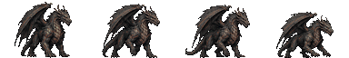
crown.unit.ancient-dragon
candidate-01/assets/runtime-v2/batch-03/units/c01-v2-b03-unit-ancient-dragon.png
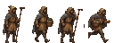
c01-b02-mission-border-farmer
candidate-01/assets/runtime-v2/batch-02/mission-units/border-farmer.png
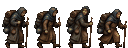
c01-b02-mission-refugee-adult
candidate-01/assets/runtime-v2/batch-02/mission-units/refugee-adult.png
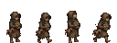
c01-b02-mission-refugee-child
candidate-01/assets/runtime-v2/batch-02/mission-units/refugee-child.png
c01-b02-mission-evacuation-driver
candidate-01/assets/runtime-v2/batch-02/mission-units/evacuation-driver.png
c01-b02-mission-baker
candidate-01/assets/runtime-v2/batch-02/mission-units/baker.png
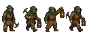
c01-b02-mission-miner
candidate-01/assets/runtime-v2/batch-02/mission-units/miner.png
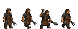
c01-b02-mission-forge-artisan
candidate-01/assets/runtime-v2/batch-02/mission-units/forge-artisan.png
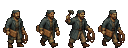
c01-b02-mission-bridge-laborer
candidate-01/assets/runtime-v2/batch-02/mission-units/bridge-laborer.png
plain
candidate-01/assets/runtime-v2/terrain/plain.png
road
candidate-01/assets/runtime-v2/terrain/road.png
bridge
candidate-01/assets/runtime-v2/terrain/bridge.png
forest
candidate-01/assets/runtime-v2/terrain/forest.png
hill
candidate-01/assets/runtime-v2/terrain/hill.png
mountain
candidate-01/assets/runtime-v2/terrain/mountain.png
water
candidate-01/assets/runtime-v2/terrain/water.png
wall
candidate-01/assets/runtime-v2/terrain/wall.png
c01-b02-terrain-scorched-farmland
candidate-01/assets/runtime-v2/batch-02/terrain/scorched-farmland.png
c01-b02-terrain-riverbank
candidate-01/assets/runtime-v2/batch-02/terrain/riverbank.png
c01-b02-terrain-capital-street
candidate-01/assets/runtime-v2/batch-02/terrain/capital-street.png
c01-b02-terrain-mother-root
candidate-01/assets/runtime-v2/batch-02/terrain/mother-root.png
c01-b02-terrain-forge-stone
candidate-01/assets/runtime-v2/batch-02/terrain/forge-stone.png
c01-b02-terrain-graveyard
candidate-01/assets/runtime-v2/batch-02/terrain/graveyard.png
c01-b02-terrain-molten-channel
candidate-01/assets/runtime-v2/batch-02/terrain/molten-channel.png
c01-b02-terrain-controlled-oath
candidate-01/assets/runtime-v2/batch-02/terrain/controlled-oath.png
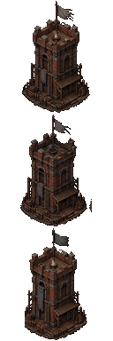
redstone-oath-tower
candidate-01/assets/runtime-v2/structures/redstone-oath-tower-states.png
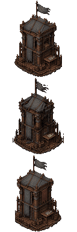
gray-banner-supply-depot
candidate-01/assets/runtime-v2/structures/gray-banner-supply-depot-states.png
village
candidate-01/assets/runtime-v2/structures/village-states.png
barracks
candidate-01/assets/runtime-v2/structures/barracks-states.png
castle
candidate-01/assets/runtime-v2/structures/castle-states.png
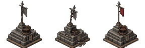
c01-b02-structure-gray-flag-point
candidate-01/assets/runtime-v2/batch-02/structures/gray-flag-point.png
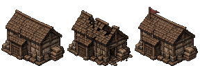
c01-b02-structure-joint-granary
candidate-01/assets/runtime-v2/batch-02/structures/joint-granary.png
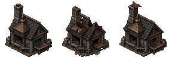
c01-b02-structure-forge-workshop
candidate-01/assets/runtime-v2/batch-02/structures/forge-workshop.png
c01-b02-structure-field-hospital
candidate-01/assets/runtime-v2/batch-02/structures/field-hospital.png
c01-b02-prop-crate-stack
candidate-01/assets/runtime-v2/batch-02/props/crate-stack.png
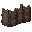
c01-b02-prop-shield-wall
candidate-01/assets/runtime-v2/batch-02/props/shield-wall.png
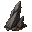
c01-b02-prop-wind-rock
candidate-01/assets/runtime-v2/batch-02/props/wind-rock.png
c01-b02-prop-overturned-grain-cart
candidate-01/assets/runtime-v2/batch-02/props/overturned-grain-cart.png
c01-b02-prop-oil-brazier
candidate-01/assets/runtime-v2/batch-02/props/oil-brazier.png
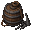
c01-b02-prop-siege-powder
candidate-01/assets/runtime-v2/batch-02/props/siege-powder.png
c01-b02-prop-wild-oath-stone
candidate-01/assets/runtime-v2/batch-02/props/wild-oath-stone.png
c01-b02-prop-dead-memory-fragment
candidate-01/assets/runtime-v2/batch-02/props/dead-memory-fragment.png
ash-spear
candidate-01/assets/runtime-v2/icons/ash-spear.png
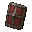
burgundy-shield
candidate-01/assets/runtime-v2/icons/burgundy-shield.png
silverwood-longbow
candidate-01/assets/runtime-v2/icons/silverwood-longbow.png
forge-oath-hammer
candidate-01/assets/runtime-v2/icons/forge-oath-hammer.png
c01-b02-equipment-swordsman
candidate-01/assets/runtime-v2/batch-02/equipment/swordsman.png
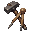
c01-b02-equipment-engineer
candidate-01/assets/runtime-v2/batch-02/equipment/engineer.png
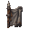
c01-b02-equipment-banner-guard
candidate-01/assets/runtime-v2/batch-02/equipment/banner-guard.png
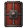
c01-b02-equipment-legion-shield
candidate-01/assets/runtime-v2/batch-02/equipment/legion-shield.png
c01-b02-equipment-rune-artificer
candidate-01/assets/runtime-v2/batch-02/equipment/rune-artificer.png
c01-b02-equipment-wolf-rider
candidate-01/assets/runtime-v2/batch-02/equipment/wolf-rider.png
c01-b02-equipment-gravekeeper
candidate-01/assets/runtime-v2/batch-02/equipment/gravekeeper.png
c01-b02-equipment-skeleton-guard
candidate-01/assets/runtime-v2/batch-02/equipment/skeleton-guard.png
healing-lantern
candidate-01/assets/runtime-v2/icons/healing-lantern.png
gray-banner-rally
candidate-01/assets/runtime-v2/icons/gray-banner-rally.png
bridge-field-repair
candidate-01/assets/runtime-v2/icons/bridge-field-repair.png
broken-oath-dispel
candidate-01/assets/runtime-v2/icons/broken-oath-dispel.png
c01-b02-skill-capture
candidate-01/assets/runtime-v2/batch-02/skills/capture.png
c01-b02-skill-guard
candidate-01/assets/runtime-v2/batch-02/skills/guard.png
c01-b02-skill-anti-cavalry
candidate-01/assets/runtime-v2/batch-02/skills/anti-cavalry.png
c01-b02-skill-scout
candidate-01/assets/runtime-v2/batch-02/skills/scout.png
c01-b02-skill-backstab
candidate-01/assets/runtime-v2/batch-02/skills/backstab.png
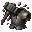
c01-b02-skill-armor-break
candidate-01/assets/runtime-v2/batch-02/skills/armor-break.png
c01-b02-skill-charge
candidate-01/assets/runtime-v2/batch-02/skills/charge.png
c01-b02-skill-command-reach
candidate-01/assets/runtime-v2/batch-02/skills/command-reach.png
c01-b02-status-poisoned
candidate-01/assets/runtime-v2/batch-02/status/poisoned.png
c01-b02-status-silenced
candidate-01/assets/runtime-v2/batch-02/status/silenced.png
c01-b02-status-guarded
candidate-01/assets/runtime-v2/batch-02/status/guarded.png
c01-b02-status-oath-controlled
candidate-01/assets/runtime-v2/batch-02/status/oath-controlled.png
blade-hit
candidate-01/assets/runtime-v2/fx/blade-hit.png
oath-flame
candidate-01/assets/runtime-v2/fx/oath-flame.png
lantern-heal
candidate-01/assets/runtime-v2/fx/lantern-heal.png
masonry-impact
candidate-01/assets/runtime-v2/fx/masonry-impact.png
c01-b02-fx-pierce
candidate-01/assets/runtime-v2/batch-02/fx/pierce.png
c01-b02-fx-arrow-hit
candidate-01/assets/runtime-v2/batch-02/fx/arrow-hit.png
c01-b02-fx-blunt-hit
candidate-01/assets/runtime-v2/batch-02/fx/blunt-hit.png
c01-b02-fx-autumn-rain
candidate-01/assets/runtime-v2/batch-02/fx/autumn-rain.png
c01-b02-hud-ally
candidate-01/assets/runtime-v2/batch-02/hud/ally.png
c01-b02-hud-enemy
candidate-01/assets/runtime-v2/batch-02/hud/enemy.png
c01-b02-hud-neutral
candidate-01/assets/runtime-v2/batch-02/hud/neutral.png
c01-b02-hud-recruitable
candidate-01/assets/runtime-v2/batch-02/hud/recruitable.png
gray-banner-dawn-council
candidate-01/assets/runtime-v2/scenes/gray-banner-dawn-council.png
c01-b02-scene-three-bridge-ceasefire
candidate-01/assets/runtime-v2/batch-02/scenes/three-bridge-ceasefire.png
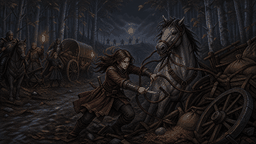
c01-b02-scene-ivra-breaks-reins
candidate-01/assets/runtime-v2/batch-02/scenes/ivra-breaks-reins.png
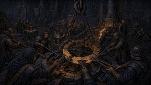
c01-b02-scene-forge-repair
candidate-01/assets/runtime-v2/batch-02/scenes/forge-repair.png
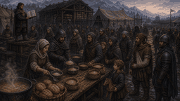
c01-b02-scene-public-rations
candidate-01/assets/runtime-v2/batch-02/scenes/public-rations.png
123 项 · 0 项来自实机通过包
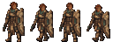
stars.unit.star-shield-trooper
candidate-02/assets/runtime-v2/units/c02-v2-unit-star-shield.png
stars.unit.rail-rifleman
candidate-02/assets/runtime-v2/units/c02-v2-unit-rail-rifleman.png
stars.unit.repair-engineer
candidate-02/assets/runtime-v2/units/c02-v2-unit-repair-engineer.png
stars.unit.public-order-guard-robot
candidate-02/assets/runtime-v2/units/c02-v2-unit-guard-robot.png
stars.unit.power-swordsman
candidate-02/assets/runtime-v2/batch-02/units/c02-v2-b02-unit-power-swordsman.png
stars.unit.symbiotic-guard
candidate-02/assets/runtime-v2/batch-02/units/c02-v2-b02-unit-symbiotic-guard.png
stars.unit.sand-rider
candidate-02/assets/runtime-v2/batch-02/units/c02-v2-b02-unit-sand-rider.png
stars.unit.hover-lancer
candidate-02/assets/runtime-v2/batch-02/units/c02-v2-b02-unit-hover-lancer.png
stars.unit.tide-fin-scout
candidate-02/assets/runtime-v2/batch-02/units/c02-v2-b02-unit-tide-fin-scout.png
stars.unit.long-beam-sniper
candidate-02/assets/runtime-v2/batch-02/units/c02-v2-b02-unit-long-beam-sniper.png
stars.unit.spore-shooter
candidate-02/assets/runtime-v2/batch-02/units/c02-v2-b02-unit-spore-shooter.png
stars.unit.star-vein-mage
candidate-02/assets/runtime-v2/batch-02/units/c02-v2-b02-unit-star-vein-mage.png
stars.unit.tide-priest
candidate-02/assets/runtime-v2/batch-03/units/c02-v2-b03-unit-tide-priest.png
stars.unit.memory-monk
candidate-02/assets/runtime-v2/batch-03/units/c02-v2-b03-unit-memory-monk.png
stars.unit.field-medic
candidate-02/assets/runtime-v2/batch-03/units/c02-v2-b03-unit-field-medic.png
stars.unit.protocol-analyst
candidate-02/assets/runtime-v2/batch-03/units/c02-v2-b03-unit-protocol-analyst.png
stars.unit.turret-vehicle
candidate-02/assets/runtime-v2/batch-03/units/c02-v2-b03-unit-turret-vehicle.png
stars.unit.light-mech
candidate-02/assets/runtime-v2/batch-03/units/c02-v2-b03-unit-light-mech.png
stars.unit.antler-knight
candidate-02/assets/runtime-v2/batch-03/units/c02-v2-b03-unit-antler-knight.png
stars.unit.forest-beast-handler
candidate-02/assets/runtime-v2/batch-03/units/c02-v2-b03-unit-forest-beast-handler.png
stars.unit.eco-maintainer
candidate-02/assets/runtime-v2/batch-03/units/c02-v2-b03-unit-eco-maintainer.png
stars.unit.boarding-team
candidate-02/assets/runtime-v2/batch-03/units/c02-v2-b03-unit-boarding-team.png
stars.unit.vacuum-trooper
candidate-02/assets/runtime-v2/batch-03/units/c02-v2-b03-unit-vacuum-trooper.png
stars.unit.stargate-guard
candidate-02/assets/runtime-v2/batch-03/units/c02-v2-b03-unit-stargate-guard.png
stars.unit.rain-tower-engineer
candidate-02/assets/runtime-v2/batch-03/units/c02-v2-b03-unit-rain-tower-engineer.png
stars.unit.wind-sail-skirmisher
candidate-02/assets/runtime-v2/batch-03/units/c02-v2-b03-unit-wind-sail-skirmisher.png
stars.unit.heat-lamp-shield
candidate-02/assets/runtime-v2/batch-03/units/c02-v2-b03-unit-heat-lamp-shield.png
stars.unit.ice-hook-hunter
candidate-02/assets/runtime-v2/batch-03/units/c02-v2-b03-unit-ice-hook-hunter.png
stars.unit.floating-city-guard
candidate-02/assets/runtime-v2/batch-03/units/c02-v2-b03-unit-floating-city-guard.png
stars.unit.tide-anchor-engineer
candidate-02/assets/runtime-v2/batch-03/units/c02-v2-b03-unit-tide-anchor-engineer.png
stars.unit.fungus-bed-medic
candidate-02/assets/runtime-v2/batch-03/units/c02-v2-b03-unit-fungus-bed-medic.png
stars.unit.defoliator-pilot
candidate-02/assets/runtime-v2/batch-03/units/c02-v2-b03-unit-defoliator-pilot.png
stars.unit.ring-rail-guard
candidate-02/assets/runtime-v2/batch-03/units/c02-v2-b03-unit-ring-rail-guard.png
stars.unit.gravity-rescuer
candidate-02/assets/runtime-v2/batch-03/units/c02-v2-b03-unit-gravity-rescuer.png
stars.unit.physical-archive-keeper
candidate-02/assets/runtime-v2/batch-03/units/c02-v2-b03-unit-physical-archive-keeper.png
stars.unit.echo-tracker
candidate-02/assets/runtime-v2/batch-03/units/c02-v2-b03-unit-echo-tracker.png
stars.unit.reset-guard
candidate-02/assets/runtime-v2/batch-03/units/c02-v2-b03-unit-reset-guard.png
stars.unit.protocol-adjudicator
candidate-02/assets/runtime-v2/batch-03/units/c02-v2-b03-unit-protocol-adjudicator.png
stars.unit.starbreaker-sapper
candidate-02/assets/runtime-v2/batch-03/units/c02-v2-b03-unit-starbreaker-sapper.png
stars.unit.rain-shepherd
candidate-02/assets/runtime-v2/batch-03/units/c02-v2-b03-unit-rain-shepherd.png
stars.mission.water-maintainer
candidate-02/assets/runtime-v2/batch-02/units/c02-v2-b02-mission-water-maintainer.png
stars.mission.water-collector
candidate-02/assets/runtime-v2/batch-02/units/c02-v2-b02-mission-water-collector.png
stars.mission.red-sand-child
candidate-02/assets/runtime-v2/batch-02/units/c02-v2-b02-mission-red-sand-child.png
stars.mission.cargo-crew
candidate-02/assets/runtime-v2/batch-02/units/c02-v2-b02-mission-cargo-crew.png
stars.mission.refugee
candidate-02/assets/runtime-v2/batch-02/units/c02-v2-b02-mission-refugee.png
stars.mission.patient
candidate-02/assets/runtime-v2/batch-02/units/c02-v2-b02-mission-patient.png
stars.mission.dock-builder
candidate-02/assets/runtime-v2/batch-02/units/c02-v2-b02-mission-dock-builder.png
stars.mission.heat-lamp-monk
candidate-02/assets/runtime-v2/batch-02/units/c02-v2-b02-mission-heat-lamp-monk.png
stars.terrain.hesha-red-sand
candidate-02/assets/runtime-v2/terrain/c02-v2-terrain-hesha-red-sand.png
stars.terrain.soler-blue-ice
candidate-02/assets/runtime-v2/terrain/c02-v2-terrain-soler-blue-ice.png
stars.terrain.verdant-root-ground
candidate-02/assets/runtime-v2/terrain/c02-v2-terrain-verdant-root-ground.png
stars.terrain.farlight-cargo-deck
candidate-02/assets/runtime-v2/terrain/c02-v2-terrain-farlight-cargo-deck.png
stars.terrain.ancient-star-vein
candidate-02/assets/runtime-v2/terrain/c02-v2-terrain-ancient-star-vein.png
stars.terrain.industrial-coolant
candidate-02/assets/runtime-v2/terrain/c02-v2-terrain-industrial-coolant.png
stars.terrain.kairon-rail
candidate-02/assets/runtime-v2/terrain/c02-v2-terrain-kairon-rail.png
stars.terrain.pressure-conduit
candidate-02/assets/runtime-v2/terrain/c02-v2-terrain-pressure-conduit.png
stars.terrain.hesha-glass-sea
candidate-02/assets/runtime-v2/batch-02/terrain/c02-v2-b02-terrain-hesha-glass-sea.png
stars.terrain.soler-brittle-ice
candidate-02/assets/runtime-v2/batch-02/terrain/c02-v2-b02-terrain-soler-brittle-ice.png
stars.terrain.verdant-fungus-bed
candidate-02/assets/runtime-v2/batch-02/terrain/c02-v2-b02-terrain-verdant-fungus-bed.png
stars.terrain.farlight-living-deck
candidate-02/assets/runtime-v2/batch-02/terrain/c02-v2-b02-terrain-farlight-living-deck.png
stars.terrain.hesha-sealed-waterway
candidate-02/assets/runtime-v2/batch-02/terrain/c02-v2-b02-terrain-hesha-sealed-waterway.png
stars.terrain.soler-heated-walkway
candidate-02/assets/runtime-v2/batch-02/terrain/c02-v2-b02-terrain-soler-heated-walkway.png
stars.terrain.nereia-reverse-current
candidate-02/assets/runtime-v2/batch-02/terrain/c02-v2-b02-terrain-nereia-reverse-current.png
stars.terrain.kairon-train-platform
candidate-02/assets/runtime-v2/batch-02/terrain/c02-v2-b02-terrain-kairon-train-platform.png
stars.structure.rain-control-node
candidate-02/assets/runtime-v2/facilities/c02-v2-facility-rain-control.png
stars.structure.freight-permission-terminal
candidate-02/assets/runtime-v2/facilities/c02-v2-facility-cargo-terminal.png
stars.structure.star-vein-node
candidate-02/assets/runtime-v2/batch-02/structures/c02-v2-b02-structure-star-vein-node.png
stars.structure.tide-anchor-console
candidate-02/assets/runtime-v2/batch-02/structures/c02-v2-b02-structure-tide-anchor-console.png
stars.structure.gravity-switch
candidate-02/assets/runtime-v2/batch-02/structures/c02-v2-b02-structure-gravity-switch.png
stars.structure.water-filter-station
candidate-02/assets/runtime-v2/batch-02/structures/c02-v2-b02-structure-water-filter-station.png
stars.prop.ceramic-water-tanks
candidate-02/assets/runtime-v2/batch-02/props/c02-v2-b02-battle-prop-ceramic-water-tanks.png
stars.prop.cargo-crates
candidate-02/assets/runtime-v2/batch-02/props/c02-v2-b02-battle-prop-cargo-crates.png
stars.prop.platform-shields
candidate-02/assets/runtime-v2/batch-02/props/c02-v2-b02-battle-prop-platform-shields.png
stars.prop.giant-roots
candidate-02/assets/runtime-v2/batch-02/props/c02-v2-b02-battle-prop-giant-roots.png
stars.prop.overload-nodes
candidate-02/assets/runtime-v2/batch-02/props/c02-v2-b02-battle-prop-overload-nodes.png
stars.prop.fuel-oxygen-tanks
candidate-02/assets/runtime-v2/batch-02/props/c02-v2-b02-battle-prop-fuel-oxygen-tanks.png
stars.prop.ice-cracks
candidate-02/assets/runtime-v2/batch-02/props/c02-v2-b02-battle-prop-ice-cracks.png
stars.prop.spore-sacs
candidate-02/assets/runtime-v2/batch-02/props/c02-v2-b02-battle-prop-spore-sacs.png
stars.equipment.star-shield-frame
candidate-02/assets/runtime-v2/icons/c02-v2-equip-star-shield.png
stars.equipment.rail-calibration-magazine
candidate-02/assets/runtime-v2/icons/c02-v2-equip-rail-magazine.png
stars.equipment.multi-standard-repair-pack
candidate-02/assets/runtime-v2/icons/c02-v2-equip-repair-pack.png
stars.equipment.low-permission-key
candidate-02/assets/runtime-v2/icons/c02-v2-equip-permission-key.png
stars.equipment.power-swordsman
candidate-02/assets/runtime-v2/batch-02/equipment/c02-v2-b02-equipment-power-swordsman.png
stars.equipment.symbiotic-guard
candidate-02/assets/runtime-v2/batch-02/equipment/c02-v2-b02-equipment-symbiotic-guard.png
stars.equipment.sand-rider
candidate-02/assets/runtime-v2/batch-02/equipment/c02-v2-b02-equipment-sand-rider.png
stars.equipment.hover-lancer
candidate-02/assets/runtime-v2/batch-02/equipment/c02-v2-b02-equipment-hover-lancer.png
stars.equipment.tide-fin-scout
candidate-02/assets/runtime-v2/batch-02/equipment/c02-v2-b02-equipment-tide-fin-scout.png
stars.equipment.long-beam-sniper
candidate-02/assets/runtime-v2/batch-02/equipment/c02-v2-b02-equipment-long-beam-sniper.png
stars.equipment.spore-shooter
candidate-02/assets/runtime-v2/batch-02/equipment/c02-v2-b02-equipment-spore-shooter.png
stars.equipment.star-vein-mage
candidate-02/assets/runtime-v2/batch-02/equipment/c02-v2-b02-equipment-star-vein-mage.png
stars.skill.deploy-star-shield
candidate-02/assets/runtime-v2/icons/c02-v2-skill-deploy-shield.png
stars.skill.rail-snipe
candidate-02/assets/runtime-v2/icons/c02-v2-skill-rail-snipe.png
stars.skill.field-repair
candidate-02/assets/runtime-v2/icons/c02-v2-skill-field-repair.png
stars.skill.capture-authority
candidate-02/assets/runtime-v2/icons/c02-v2-skill-capture-authority.png
stars.skill.assault
candidate-02/assets/runtime-v2/batch-02/skills/c02-v2-b02-skill-assault.png
stars.skill.rescue-dash
candidate-02/assets/runtime-v2/batch-02/skills/c02-v2-b02-skill-rescue-dash.png
stars.skill.snipe
candidate-02/assets/runtime-v2/batch-02/skills/c02-v2-b02-skill-snipe.png
stars.skill.spore-shot
candidate-02/assets/runtime-v2/batch-02/skills/c02-v2-b02-skill-spore-shot.png
stars.skill.vein-downgrade
candidate-02/assets/runtime-v2/batch-02/skills/c02-v2-b02-skill-vein-downgrade.png
stars.skill.sand-sail
candidate-02/assets/runtime-v2/batch-02/skills/c02-v2-b02-skill-sand-sail.png
stars.skill.shift-tide
candidate-02/assets/runtime-v2/batch-02/skills/c02-v2-b02-skill-shift-tide.png
stars.skill.symbiotic-regen
candidate-02/assets/runtime-v2/batch-02/skills/c02-v2-b02-skill-symbiotic-regen.png
stars.status.controlled
candidate-02/assets/runtime-v2/batch-02/status/c02-v2-b02-status-controlled.png
stars.status.hidden
candidate-02/assets/runtime-v2/batch-02/status/c02-v2-b02-status-hidden.png
stars.status.overheated
candidate-02/assets/runtime-v2/batch-02/status/c02-v2-b02-status-overheated.png
stars.status.hypothermia
candidate-02/assets/runtime-v2/batch-02/status/c02-v2-b02-status-hypothermia.png
stars.fx.rail-impact
candidate-02/assets/runtime-v2/fx/c02-v2-fx-rail-impact.png
stars.fx.shield-deploy
candidate-02/assets/runtime-v2/fx/c02-v2-fx-shield-deploy.png
stars.fx.repair-sparks
candidate-02/assets/runtime-v2/fx/c02-v2-fx-repair-sparks.png
stars.fx.sand-rain-gust
candidate-02/assets/runtime-v2/fx/c02-v2-fx-sand-rain-gust.png
stars.fx.blade-hit
candidate-02/assets/runtime-v2/batch-02/fx/c02-v2-b02-fx-blade-hit.png
stars.fx.explosion
candidate-02/assets/runtime-v2/batch-02/fx/c02-v2-b02-fx-explosion.png
stars.fx.bio-hit
candidate-02/assets/runtime-v2/batch-02/fx/c02-v2-b02-fx-bio-hit.png
stars.fx.vacuum-rupture
candidate-02/assets/runtime-v2/batch-02/fx/c02-v2-b02-fx-vacuum-rupture.png
stars.hud.ally
candidate-02/assets/runtime-v2/batch-02/hud/c02-v2-b02-hud-ally.png
stars.hud.enemy
candidate-02/assets/runtime-v2/batch-02/hud/c02-v2-b02-hud-enemy.png
stars.hud.main-objective
candidate-02/assets/runtime-v2/batch-02/hud/c02-v2-b02-hud-main-objective.png
stars.hud.danger
candidate-02/assets/runtime-v2/batch-02/hud/c02-v2-b02-hud-danger.png
stars.scene.rain-tower-collective-repair
candidate-02/assets/runtime-v2/scenes/c02-v2-scene-rain-tower-repair.png
stars.scene.growing-wall
candidate-02/assets/runtime-v2/batch-02/scenes/c02-v2-b02-scene-growing-wall.png
stars.scene.inverted-city-maintenance
candidate-02/assets/runtime-v2/batch-02/scenes/c02-v2-b02-scene-inverted-city-maintenance.png
stars.scene.soler-ice-beacon
candidate-02/assets/runtime-v2/batch-02/scenes/c02-v2-b02-scene-soler-ice-beacon.png
stars.scene.nereia-platform-vote
candidate-02/assets/runtime-v2/batch-02/scenes/c02-v2-b02-scene-nereia-platform-vote.png
123 项 · 0 项来自实机通过包
grain.unit.saber-shield
candidate-03/assets/runtime-v2/units/saber-shield.png
grain.unit.spear-line
candidate-03/assets/runtime-v2/units/spear-line.png
grain.unit.rural-archer
candidate-03/assets/runtime-v2/units/rural-archer.png
grain.unit.river-engineer
candidate-03/assets/runtime-v2/units/river-engineer.png
grain.unit.modao
candidate-03/assets/runtime-v2/batch-02/units/modao.png
grain.unit.heavy-crossbow
candidate-03/assets/runtime-v2/batch-02/units/heavy-crossbow.png
grain.unit.divine-arm-crossbow
candidate-03/assets/runtime-v2/batch-02/units/divine-arm-crossbow.png
grain.unit.light-cavalry
candidate-03/assets/runtime-v2/batch-02/units/light-cavalry.png
grain.unit.armored-cavalry
candidate-03/assets/runtime-v2/batch-02/units/armored-cavalry.png
grain.unit.border-scout
candidate-03/assets/runtime-v2/batch-02/units/border-scout.png
grain.unit.mengchong
candidate-03/assets/runtime-v2/batch-02/units/mengchong.png
grain.unit.tower-ship-marine
candidate-03/assets/runtime-v2/batch-02/units/tower-ship-marine.png
grain.unit.fire-ship
candidate-03/assets/runtime-v2/batch-03/units/fire-ship.png
grain.unit.bridge-corps
candidate-03/assets/runtime-v2/batch-03/units/bridge-corps.png
grain.unit.ladder-corps
candidate-03/assets/runtime-v2/batch-03/units/ladder-corps.png
grain.unit.catapult-crew
candidate-03/assets/runtime-v2/batch-03/units/catapult-crew.png
grain.unit.musketeer
candidate-03/assets/runtime-v2/batch-03/units/musketeer.png
grain.unit.fire-arrow-corps
candidate-03/assets/runtime-v2/batch-03/units/fire-arrow-corps.png
grain.unit.thunder-bomb-corps
candidate-03/assets/runtime-v2/batch-03/units/thunder-bomb-corps.png
grain.unit.field-medic
candidate-03/assets/runtime-v2/batch-03/units/field-medic.png
grain.unit.drummer-standard
candidate-03/assets/runtime-v2/batch-03/units/drummer-standard.png
grain.unit.quartermaster
candidate-03/assets/runtime-v2/batch-03/units/quartermaster.png
grain.unit.strategist
candidate-03/assets/runtime-v2/batch-03/units/strategist.png
grain.unit.scout-office-agent
candidate-03/assets/runtime-v2/batch-03/units/scout-office-agent.png
grain.unit.envoy
candidate-03/assets/runtime-v2/batch-03/units/envoy.png
grain.unit.village-militia
candidate-03/assets/runtime-v2/batch-03/units/village-militia.png
grain.unit.gate-shield-guard
candidate-03/assets/runtime-v2/batch-03/units/gate-shield-guard.png
grain.unit.commander-retinue
candidate-03/assets/runtime-v2/batch-03/units/commander-retinue.png
grain.unit.warhammer-breaker
candidate-03/assets/runtime-v2/batch-03/units/warhammer-breaker.png
grain.unit.fortification-guard
candidate-03/assets/runtime-v2/batch-03/units/fortification-guard.png
grain.unit.covert-hull-saboteur
candidate-03/assets/runtime-v2/batch-03/units/covert-hull-saboteur.png
grain.unit.canal-escort
candidate-03/assets/runtime-v2/batch-03/units/canal-escort.png
grain.unit.salt-store-guard
candidate-03/assets/runtime-v2/batch-03/units/salt-store-guard.png
grain.unit.snowfield-horse-archer
candidate-03/assets/runtime-v2/batch-03/units/snowfield-horse-archer.png
grain.unit.frontier-market-guard
candidate-03/assets/runtime-v2/batch-03/units/frontier-market-guard.png
grain.unit.ning-imperial-guard
candidate-03/assets/runtime-v2/batch-03/units/ning-imperial-guard.png
grain.unit.secret-inspector
candidate-03/assets/runtime-v2/batch-03/units/secret-inspector.png
grain.unit.tunnel-corps
candidate-03/assets/runtime-v2/batch-03/units/tunnel-corps.png
grain.unit.fire-oil-defense
candidate-03/assets/runtime-v2/batch-03/units/fire-oil-defense.png
grain.unit.reorganized-surrendered
candidate-03/assets/runtime-v2/batch-03/units/reorganized-surrendered.png
grain.mission.refugee
candidate-03/assets/runtime-v2/batch-02/mission-units/refugee.png
grain.mission.farmer
candidate-03/assets/runtime-v2/batch-02/mission-units/farmer.png
grain.mission.sowing-team
candidate-03/assets/runtime-v2/batch-02/mission-units/sowing-team.png
grain.mission.dike-apprentice
candidate-03/assets/runtime-v2/batch-02/mission-units/dike-apprentice.png
grain.mission.water-league-deckhand
candidate-03/assets/runtime-v2/batch-02/mission-units/water-league-deckhand.png
grain.mission.salt-worker
candidate-03/assets/runtime-v2/batch-02/mission-units/salt-worker.png
grain.mission.granary-porter
candidate-03/assets/runtime-v2/batch-02/mission-units/granary-porter.png
grain.mission.grain-cart-driver
candidate-03/assets/runtime-v2/batch-02/mission-units/grain-cart-driver.png
grain.terrain.river
candidate-03/assets/runtime-v2/terrain/river.png
grain.terrain.ford
candidate-03/assets/runtime-v2/terrain/ford.png
grain.terrain.dike
candidate-03/assets/runtime-v2/terrain/dike.png
grain.terrain.dike-breach
candidate-03/assets/runtime-v2/terrain/dike-breach.png
grain.terrain.paddy-flooded
candidate-03/assets/runtime-v2/terrain/paddy-flooded.png
grain.terrain.paddy-mature
candidate-03/assets/runtime-v2/terrain/paddy-mature.png
grain.terrain.road-mud
candidate-03/assets/runtime-v2/terrain/road-mud.png
grain.terrain.road-stone
candidate-03/assets/runtime-v2/terrain/road-stone.png
grain.terrain.cracked-famine-field
candidate-03/assets/runtime-v2/batch-02/terrain/cracked-famine-field.png
grain.terrain.receding-mud
candidate-03/assets/runtime-v2/batch-02/terrain/receding-mud.png
grain.terrain.reclaimed-furrow
candidate-03/assets/runtime-v2/batch-02/terrain/reclaimed-furrow.png
grain.terrain.stone-seep-ditch
candidate-03/assets/runtime-v2/batch-02/terrain/stone-seep-ditch.png
grain.terrain.flood-channel
candidate-03/assets/runtime-v2/batch-02/terrain/flood-channel.png
grain.terrain.reed-bank
candidate-03/assets/runtime-v2/batch-02/terrain/reed-bank.png
grain.terrain.pontoon-edge
candidate-03/assets/runtime-v2/batch-02/terrain/pontoon-edge.png
grain.terrain.wall-walk
candidate-03/assets/runtime-v2/batch-02/terrain/wall-walk.png
grain.structure.county-granary
candidate-03/assets/runtime-v2/structures/county-granary.png
grain.structure.sluice-bridgehead
candidate-03/assets/runtime-v2/structures/sluice-bridgehead.png
grain.structure.command-banner
candidate-03/assets/runtime-v2/batch-02/structures/command-banner.png
grain.structure.city-gate-control
candidate-03/assets/runtime-v2/batch-02/structures/city-gate-control.png
grain.structure.navigation-beacon
candidate-03/assets/runtime-v2/batch-02/structures/navigation-beacon.png
grain.structure.field-supply-depot
candidate-03/assets/runtime-v2/batch-02/structures/field-supply-depot.png
grain.prop.grain-crate-cover
candidate-03/assets/runtime-v2/batch-02/props/grain-crate-cover.png
grain.prop.wood-shield-wall
candidate-03/assets/runtime-v2/batch-02/props/wood-shield-wall.png
grain.prop.saltbag-cover
candidate-03/assets/runtime-v2/batch-02/props/saltbag-cover.png
grain.prop.overturned-grain-cart
candidate-03/assets/runtime-v2/batch-02/props/overturned-grain-cart.png
grain.prop.powder-barrel
candidate-03/assets/runtime-v2/batch-02/props/powder-barrel.png
grain.prop.fire-oil-jar
candidate-03/assets/runtime-v2/batch-02/props/fire-oil-jar.png
grain.prop.loose-dike-earth
candidate-03/assets/runtime-v2/batch-02/props/loose-dike-earth.png
grain.prop.fire-arrow-bundle
candidate-03/assets/runtime-v2/batch-02/props/fire-arrow-bundle.png
grain.equipment.saber-shield
candidate-03/assets/runtime-v2/icons/equipment-saber-shield.png
grain.equipment.spear
candidate-03/assets/runtime-v2/icons/equipment-spear.png
grain.equipment.rural-bow
candidate-03/assets/runtime-v2/icons/equipment-rural-bow.png
grain.equipment.river-tools
candidate-03/assets/runtime-v2/icons/equipment-river-tools.png
grain.equipment.modao
candidate-03/assets/runtime-v2/batch-02/equipment/equipment-modao.png
grain.equipment.heavy-crossbow
candidate-03/assets/runtime-v2/batch-02/equipment/equipment-heavy-crossbow.png
grain.equipment.divine-arm-crossbow
candidate-03/assets/runtime-v2/batch-02/equipment/equipment-divine-arm-crossbow.png
grain.equipment.light-cavalry
candidate-03/assets/runtime-v2/batch-02/equipment/equipment-light-cavalry.png
grain.equipment.armored-cavalry
candidate-03/assets/runtime-v2/batch-02/equipment/equipment-armored-cavalry.png
grain.equipment.border-scout
candidate-03/assets/runtime-v2/batch-02/equipment/equipment-border-scout.png
grain.equipment.mengchong
candidate-03/assets/runtime-v2/batch-02/equipment/equipment-mengchong.png
grain.equipment.tower-ship-marine
candidate-03/assets/runtime-v2/batch-02/equipment/equipment-tower-ship-marine.png
grain.skill.guard
candidate-03/assets/runtime-v2/icons/skill-guard.png
grain.skill.spear-brace
candidate-03/assets/runtime-v2/icons/skill-spear-brace.png
grain.skill.volley
candidate-03/assets/runtime-v2/icons/skill-volley.png
grain.skill.dike-repair
candidate-03/assets/runtime-v2/icons/skill-dike-repair.png
grain.skill.armor-break
candidate-03/assets/runtime-v2/batch-02/skills/skill-armor-break.png
grain.skill.aimed-shot
candidate-03/assets/runtime-v2/batch-02/skills/skill-aimed-shot.png
grain.skill.suppression
candidate-03/assets/runtime-v2/batch-02/skills/skill-suppression.png
grain.skill.cavalry-flank
candidate-03/assets/runtime-v2/batch-02/skills/skill-cavalry-flank.png
grain.skill.pursuit
candidate-03/assets/runtime-v2/batch-02/skills/skill-pursuit.png
grain.skill.boarding
candidate-03/assets/runtime-v2/batch-02/skills/skill-boarding.png
grain.skill.field-treatment
candidate-03/assets/runtime-v2/batch-02/skills/skill-field-treatment.png
grain.skill.banner-inspire
candidate-03/assets/runtime-v2/batch-02/skills/skill-banner-inspire.png
grain.status.wounded
candidate-03/assets/runtime-v2/batch-02/status/status-wounded.png
grain.status.burning
candidate-03/assets/runtime-v2/batch-02/status/status-burning.png
grain.status.soaked
candidate-03/assets/runtime-v2/batch-02/status/status-soaked.png
grain.status.routed
candidate-03/assets/runtime-v2/batch-02/status/status-routed.png
grain.fx.hit-sparks
candidate-03/assets/runtime-v2/fx/hit-sparks.png
grain.fx.controlled-fire
candidate-03/assets/runtime-v2/fx/controlled-fire.png
grain.fx.mud-splash
candidate-03/assets/runtime-v2/fx/mud-splash.png
grain.fx.repair-chips
candidate-03/assets/runtime-v2/fx/repair-chips.png
grain.fx.musket-hit
candidate-03/assets/runtime-v2/batch-02/fx/musket-hit.png
grain.fx.demolition-blast
candidate-03/assets/runtime-v2/batch-02/fx/demolition-blast.png
grain.fx.heavy-rain-area
candidate-03/assets/runtime-v2/batch-02/fx/heavy-rain-area.png
grain.fx.snowstorm-area
candidate-03/assets/runtime-v2/batch-02/fx/snowstorm-area.png
grain.hud.ally
candidate-03/assets/runtime-v2/batch-02/hud/hud-ally.png
grain.hud.enemy
candidate-03/assets/runtime-v2/batch-02/hud/hud-enemy.png
grain.hud.neutral
candidate-03/assets/runtime-v2/batch-02/hud/hud-neutral.png
grain.hud.recruitable
candidate-03/assets/runtime-v2/batch-02/hud/hud-recruitable.png
grain.scene.open-granary
candidate-03/assets/runtime-v2/scenes/open-granary-night.png
grain.scene.pre-dawn-grain-cart
candidate-03/assets/runtime-v2/batch-02/scenes/pre-dawn-grain-cart.png
grain.scene.breach-boundary-dispute
candidate-03/assets/runtime-v2/batch-02/scenes/breach-boundary-dispute.png
grain.scene.reed-bank-white-lamp
candidate-03/assets/runtime-v2/batch-02/scenes/reed-bank-white-lamp.png
grain.scene.first-banner-law
candidate-03/assets/runtime-v2/batch-02/scenes/first-banner-law.png
没有符合条件的素材。